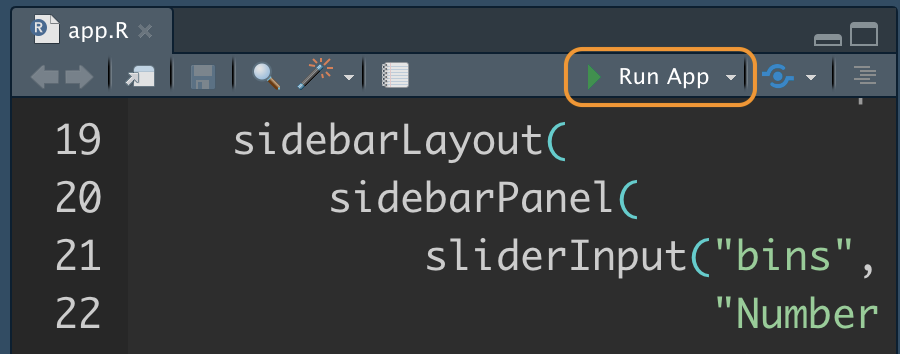

Ch. 1 前言
Shiny App 是 RStudio推出供R語言使用的網頁應用框架（Web application framework），透過Shiny，使用者可以輕鬆地將資料分析結果轉換成互動式的網頁應用程式，簡單來說就是動態網站，如果不做客製化的使用者介面調整，不用另外學習其他網頁程式語言（如HTML, CSS, JavaScript等），若要使用Shiny， RStudio IDE提供完整測試預覽功能，建議一起使用。使用前必須先安裝並載入shiny package (Chang et al. 2020)
安裝完成後，若想快速體驗Shiny App的效果，可執行下列程式碼，查看Shiny package內提供的11個網頁部署範例，以及參考範例相對應的原始碼：
runExample("01_hello") # a histogram
runExample("02_text") # tables and data frames
runExample("03_reactivity") # a reactive expression
runExample("04_mpg") # global variables
runExample("05_sliders") # slider bars
runExample("06_tabsets") # tabbed panels
runExample("07_widgets") # help text and submit buttons
runExample("08_html") # Shiny app built from HTML
runExample("09_upload") # file upload wizard
runExample("10_download") # file download wizard
runExample("11_timer") # an automated timer使開始資料分析專案類似，若有使用RStudio IDE，在開始建構Shiny App前建議先新增一個Shiny Project，建構方式為:
- 點選Create a Project
- 依需求選擇需要開新資料夾或是使用原有資料夾
- 選擇Shiny Web Application Project
- 輸入Project name，也會同時是資料夾的名稱
- 完成新增Shiny Project，資料夾中會有一個app.R檔案，即為撰寫Shiny App前後端程式碼的地方
- 點選程式碼上方的Run，就會跑出經典的Shiny App範例程式

經典的直方圖Shiny範例程式：

References
Chang, Winston, Joe Cheng, JJ Allaire, Yihui Xie, and Jonathan McPherson. 2020. Shiny: Web Application Framework for R. https://CRAN.R-project.org/package=shiny.